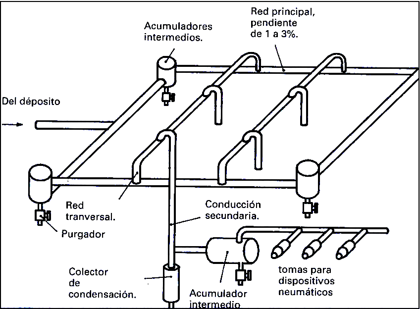

Un sistema de distribución de aire está diseñado para proporcionar un suministro ininterrumpido de aire comprimido justo donde se necesita. Normalmente, un sistema de red de aire comprimido consta de tuberías y racores y accesorios de punto de uso. Una buena red de tuberías de distribución de aire transporta el aire comprimido desde la fuente hasta el punto de uso en condiciones óptimas:
- Mínima caída de presión
- Máximo caudal
- Máxima calidad del aire.
Normalmente la red de distribución de aire comprimido se divide en dos zonas: la red principal y la red secundaria.

Red principal
Es la que proviene directamente del sistema de acondicionamiento del aire comprimido. Sus características principales son:
- Tubos de mayor diámetro: puesto que todo el aire comprimido del sistema pasa por esta primera zona de la instalación. Además, suele sobredimensionarse por si hay que ampliar en el futuro la instalación.
- Forma de parrilla: normalmente se adopta esa forma de red para garantizar que el aire llegue por diferentes caminos a los puntos de utilización. Así se garantiza el funcionamiento aunque haya alguna avería o mantenimiento en otro punto de la instalación.
- Pendiente del 1 % al 3%: por si aparece alguna condensación, que no se quede atrapada en los tubos y se deslice para ser purgada del sistema.
- Evitar cambios bruscos de sección y dirección: las tuberías deben ser lo más rectas y uniformes posible, para evitar pérdidas de presión.
Red secundaria
Es la parte de la instalación donde se encuentran las tuberías finales que llevan el aire comprimido a los actuadores. Tendremos en cuenta algunas consideraciones a la hora de diseñarla:
- Para evitar detener el suministro de aire comprimido en la red cuando se hagan reparaciones de fugas, nuevas instalaciones y operaciones de mantenimiento es esencial que se ubiquen llaves de paso frecuentemente en la red.
- Las tomas de aire para los actuadores no deben de hacerse nunca en la parte inferior de la tubería sino en la parte superior, para evitar que el agua condensada que circula por defecto de la gravedad pueda ser recogida y llevada a los distintos equipos neumáticos conectados a la red.
En general, debe intentarse que la pérdida de presión que experimente el aire debido a la fricción en los tubos, codos, válvulas, etc., no supere el 5 % de la presión nominal de trabajo. En general, a mayor diámetro de las tuberías, menos pérdida de carga. Pero, dado que hay que mantener una velocidad del aire de entre 6 a 10 m/s en los tubos, mayor diámetro implica mayor caudal, lo que encarece todo el sistema (compresor, unidad de mantenimiento, depósitos, etc). Hay que intentar diseñar la instalación de manera óptima, aunque es un cálculo complicado y, en la práctica, suele sobredimensionarse un poco por si acaso.